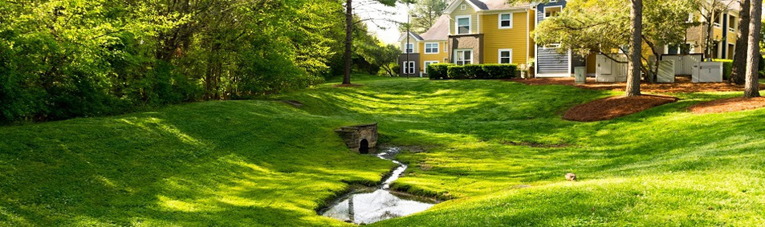
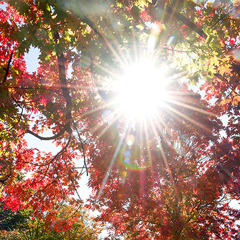
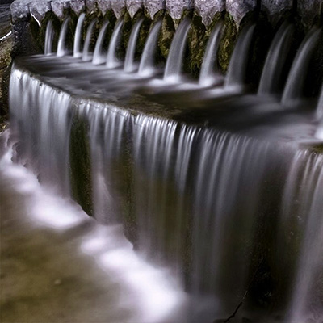
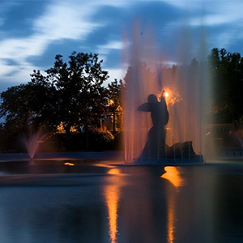
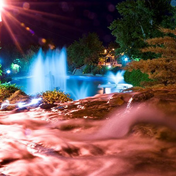
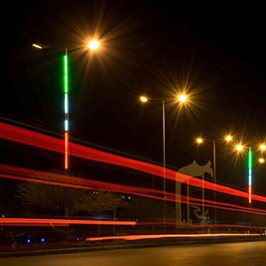
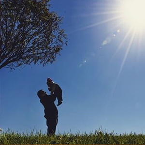

| If your camera has the ability to control speed and aperture, then you can create gorgeous pictures with changing them, I have listed some techniques below: | |
|---|---|
How to make sun stars in your photos:In this photo the sun poke through the trees of a street. When light passing through a small aperture in the lens then creates a sun star (small aperture means f/16 –f/22). Every aperture be small then your sun star’s edge will be sharper than usual. Be sure to set your speed right light output. Then paly with the sun light where the sun star occur in your image,it happen when the sun light hits the object. You will notice the change in light when you are looking through the shutter, while you found your favorite situation, then focus on the sun and take your image Take a few test shots to check your exposure in your image. If you have taken your photo on a high resolution then you can edit your photos with light room or Photoshop,then detail in the photos should be sharp and natural. |
 |
How to create bokeh in the background:Bokeh is blurry spots in the photo, turning small points of light into soft circles. Sometime we can create beautiful bokeh with brighter pinpoints of light. Bokeh created shallow depth of field, it means we can move closer to the subject or keep the background farther away. A wide aperture can throw the entire subject out of focus, f/1.4 is the best aperture to create soft and good bokeh. |
|
How to create motion blur in photos:Adding motion blur, or any other form of blur when circumstances are right, it can be extremely well. Flowing water, like waterfall photos usually look best when be completely blurred. To create a photo like this, we need a shutter speed to be more than two seconds to use. We must use Camera Tripod for low speed. When speed is low, picture look bright, to have a good exposure we can close aperture. |
 |
| Some works with diffrent apertures and shutter speeds. | |||||
|  |  |  |  | ||
|
HOME GALLERY SURREAL TUTORIAL CONTACT ABOUT |
asaminf0@email.cpcc.edu |


|
Designed by Atefeh Saminfar. All rights reserved. © 2020 |